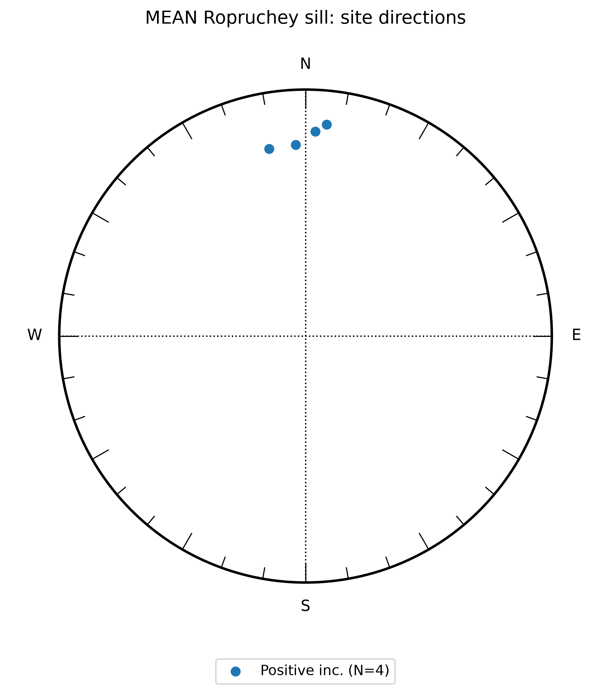
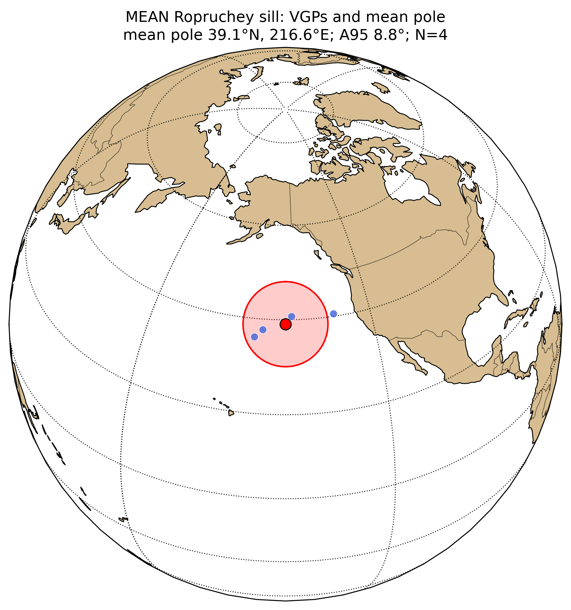
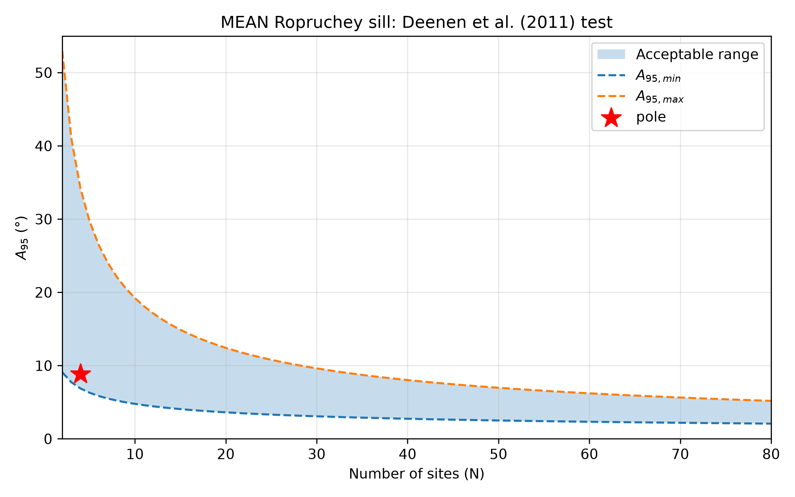

Match status: exact. Matched sheet: MEAN Ropruchey sill.
Matched Excel sheet
MEAN Ropruchey sill
Usable site rows
4
Match status
exact
Note
Scientific assessment scaffold
Living assessment page: these sections follow the Laurentia-style structure requested for Baltica. They are placeholders for now and can be filled gradually while the site-level data continue to be updated.
1. Geological context
Not yet entered. Add summary of rock unit, regional setting, stratigraphy/intrusion context, and sampling context.
2. Magnetization components
Not yet entered. Add ChRM/component interpretation, polarity, demagnetization behavior, and tests where available.
3. Age constraints
Not yet entered. Add age basis, uncertainty, dating method, and relation between magnetization age and rock age.
4. Site-level data
Shown below from the current linked Excel sheet. This section will update when the source workbook is replaced and pages are regenerated.
5. PSV variation
Not yet entered. Add site/VGP scatter, number of sites, time averaging, and PSV-related caveats.
6. Comparison to Baltica A-/B-grade poles
Not yet entered. Add comparison to coeval Baltica poles and reliability implications.
7. Comparison to younger Baltica poles
Not yet entered. Add comparison to younger poles/APWP segments to evaluate overlap or possible remagnetization.
Future assessment text should come from human-checked scientific input files, not manual HTML editing. Regenerate pages after updating source data.
Site-level data
site
dir_dec
dir_inc
dir_k
dir_alpha95
dir_n_samples
vgp_lat
vgp_lon
2.1 Shoksha + Sheltozero gabbro-dolerites
349
23.7
30
10.4
6
40.52
229.79
2.11 Shoksha + Sheltozero gabbro
5.7
14.9
52.5
7.9
6
36.21
208.59
2.12 Ladva gabbro-dolerites
357.1
23.4
35.6
7.1
11
40.7
218.2
Rybreka sill, A,
2.7
18.1
51.3
7.4
7
37.8
210.6
Source workbook: data/site_level_data_site_comments_added.xlsx;
sheet: MEAN Ropruchey sill.
This table is regenerated automatically from the workbook.
Site-level direction scatter
Tilt-corrected site directions for MEAN Ropruchey sill.
Filled and open symbols distinguish positive and negative inclinations.
This plot shows the scatter of individual site directions behind the mean pole.

Site-level direction scatter for MEAN Ropruchey sill.
No polarity unification is applied in this diagnostic plot.
Site-level VGPs and mean pole
Site-level VGPs are plotted on an orthographic globe together with the Fisher mean
pole and its circular A95 confidence region. This is the Laurentia-style view needed
to inspect the spatial scatter of the site poles.

Site-level VGPs, mean pole, and A95 confidence circle for MEAN Ropruchey sill.
Paleosecular variation
The Deenen et al. (2011) diagnostic compares the pole A95 with the expected range
for the number of site-level VGPs. This provides a first-order PSV-style check.

Deenen-style A95 versus number-of-sites diagnostic for MEAN Ropruchey sill.